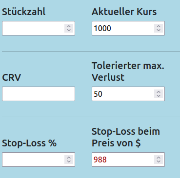
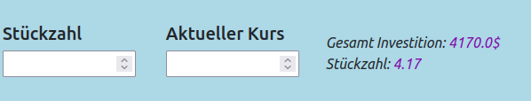
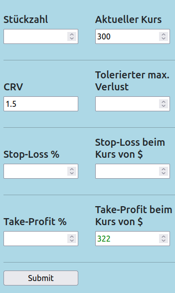
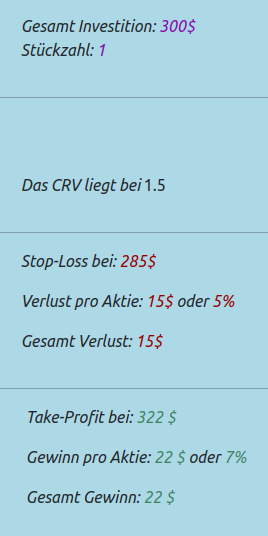

{% extends "base.html" %}
{% block body %}
Anleitung
und Beispiele für den Risk Calculator
- Beispiel 1:
Sie haben einen tolerierten maximalen Verlust und haben einen Ziel Stop-Loss?
Lassen Sie sich die zu kaufende Stückzahl berechnen.
Eingabe:

Ausgabe:

-
Beispiel 2:
Sie haben einen festen CRV mit dem Sie arbeiten?
Lassen sie sich den fehlenden Wert zur Ober- oder zur Unterseite berechnen.
Eingabe:

Ausgabe:

{% endblock %}